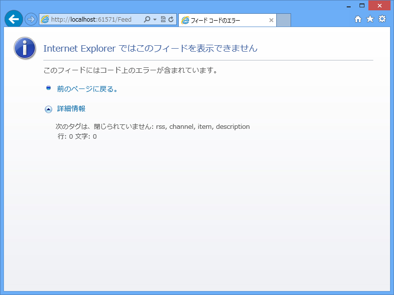

WebMatrix 3: RSS フィードを出力する
公開日：
とあるフォルダー内のファイルのリストを RSS で出力したいなぁ、と思って昔に書いた記事（RSS 2.0 を実装する - だるろぐ）をコピペしてみたのだけれど、ちゃんと動かなかった……なぜだ。まぁ、原因を追求するのも面倒だったので、SyndicationFeed クラスを利用して書きなおしてみました。
@using System.IO @using System.Xml @using System.ServiceModel.Syndication@{ var url = new Uri(Request.Url.Scheme + "://" + Request.Url.Authority);
// ココらへんはあんまり気にしないで var files = Directory.GetFiles(Server.MapPath("~/App_Text/")) .Select(_ => new FileInfo(_)) .Where(_ => !_.Name.StartsWith("_")) .OrderByDescending(_ => _.LastWriteTime) .Take(10);
var feed = new SyndicationFeed(App.Title, App.Description, new Uri(url, "Feed")) { Copyright = new TextSyndicationContent(App.Copyright.ToString()), Items = files.Select(file => { var name = Path.GetFileNameWithoutExtension(file.FullName);
// ファイルの内容を読み込んで自作の Markdown エンジンにかけている var content = TextFormatEngine.Transform(File.ReadAllText(file.FullName));
return new SyndicationItem( name, content.ToString(), new Uri(url, name), name, file.LastWriteTime ); }), };
Response.Clear(); Response.ContentType = "application/xml"; var writer = XmlWriter.Create(Response.Output); feed.SaveAsRss20(writer); Response.End(); }

できた！

と思ったけど、Internet Explorer ではちゃんと表示できない。なんか XML が尻切れトンボで出力されておる……